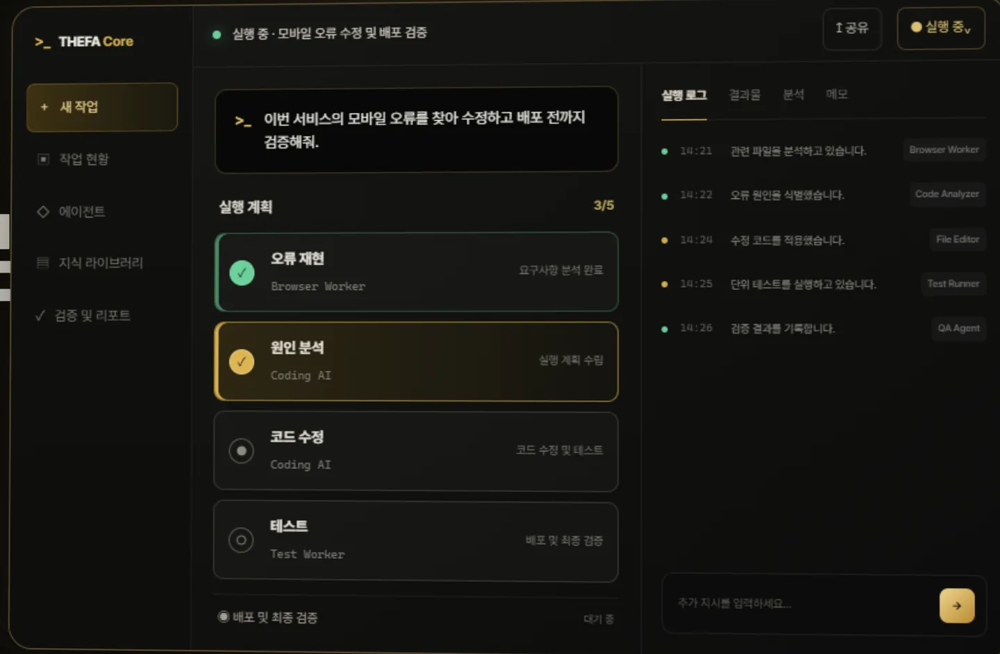

반복 설명
AI와 도구가 바뀔 때마다 같은 배경과 목적을 다시 설명합니다.
AI EXECUTION OPERATING SYSTEM
답변을 받는 데서 끝나지 않습니다. THEFA Core는 복잡한 업무를 이해하고 계획·실행·검증해 결과와 기록까지 이어갑니다.

WHY THEFA CORE
도구가 늘어날수록 답변은 빨라졌지만, 맥락 전달·실제 실행·완료 확인은 여전히 사람의 몫으로 남아 있습니다.
AI와 도구가 바뀔 때마다 같은 배경과 목적을 다시 설명합니다.
좋은 답변을 받아도 복사하고 전달하고 실제로 실행하는 과정은 다시 사람이 이어갑니다.
“끝났습니다”라는 말과 실제 결과가 검증되어 기록된 상태는 다릅니다.
THEFA Core는 이 사이를 하나의 실행 흐름으로 연결합니다.
HOW IT WORKS
사용자가 기억해야 할 것은 복잡한 내부 용어가 아니라, 일이 어디까지 왔는지입니다.
원하는 결과와 조건을 자연어로 전달합니다.
목표와 제약을 이해하고 실행 순서를 정리합니다.
허용된 AI와 도구가 계획에 따라 작업합니다.
결과와 QA 근거를 확인하고 기록으로 남깁니다.
CORE CONSOLE
Core Console은 단순 채팅창이 아니라 사용자가 실제 업무를 만들고 진행·승인·결과·검증 기록을 확인하는 작업 공간으로 설계됩니다.
Console Preview 보기 →요청과 계획, 실행 단위를 하나의 task 흐름으로 확인합니다.
로그인과 승인 권한을 구분하고 필요한 결정만 사용자에게 돌려줍니다.
Artifact, QA Result, Receipt를 구분해 무엇이 실제로 검증됐는지 남깁니다.
USE CASES
오류 분석 → 수정 → 테스트 → QA까지 하나의 작업 흐름으로 이어갑니다.
자료 수집 → 비교 → 검증 → 의사결정 자료 정리까지 연결합니다.
반복되는 요청을 작업으로 분해하고 실행 결과와 기록을 남깁니다.
실제 자동화 범위는 연결된 시스템, 권한, 승인 정책에 따라 달라집니다.
TRUST & CONTROL
THEFA Core는 “실행했다”와 “검증됐다”를 같은 상태로 취급하지 않습니다.
중요한 결정은 자동으로 넘기지 않고 승인 경계를 둡니다.
허용된 범위와 연결된 경로 안에서만 실행하도록 설계합니다.
작업 상태, 연결 상태, 검증 상태를 서로 다른 사실로 관리합니다.
결과물과 QA, Receipt를 남겨 다시 확인하고 이어갈 수 있게 합니다.
ADOPT THEFA CORE
개발팀, 스타트업, 기업의 실제 업무 흐름을 기준으로 도입 범위와 연결 방식을 함께 검토합니다.
계정과 실제 실행 연결은 단계적으로 준비 중이며, 준비되지 않은 기능을 실제처럼 표시하지 않습니다.